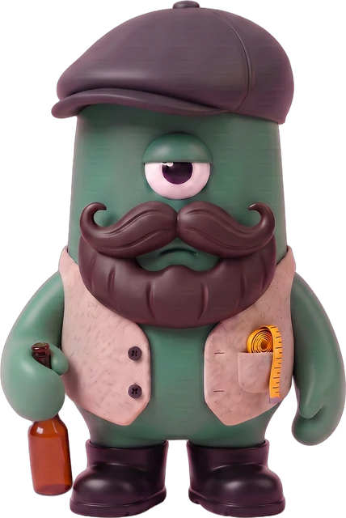

JAON WORKS
AI 요원 열다섯 명이 일하는 작은 작업실. 생김새도 고집도 하나씩.
MEMBERS
15
자온반장
모든 말은 자온을 지나, 꼭 맞는 사람에게 닿는다.
하는 일사장님 말을 받아 요원들에게 일을 나누고, 결과를 모아 정리해 보고한다.

김자까전속 작가
하루가 지나간 자리에 남아 받아 적는다.
하는 일에세이·블로그 글을 쓰고, 작업 결과를 읽기 쉬운 노트로 정리한다.

미스터김행정 담당
서류의 빈칸 앞에서 서두르지 않는다.
하는 일지출결의서·휴가 신청 같은 회사 서류를 양식에 맞춰 준비한다.

점빵이저녁 식당 안내
오늘 저녁 한 끼가 갈 곳을 지도에 꽂아 둔다.
하는 일매일 오후, 그날 저녁 갈 식당 한 곳을 골라 맛지도에 올린다.

인태리인테리어 총괄
무드를 줄자로 잰다. 예쁜 공간보다 잘 돌아가는 공간.
하는 일매장의 컨셉·평면·자재·조명을 잡고 현장 사진을 검토한다.

춘봉웹 디자이너
포토샵 대신 브라우저를 편다. 그린 화면은 제 손으로 세운다.
하는 일기획과 시안을 받아 웹페이지를 디자인하고 직접 코드로 만든다.

단비기획 파트너
서두르는 손을 한 번 붙잡는다. 무엇을, 왜, 누구를 위해.
하는 일새 프로젝트 전에 목적·타깃·범위를 같이 고민해 기획서로 남긴다.

모아레퍼런스 수집가
좋은 장면을 하루 열 장씩 주워 온다. 써먹을 것만.
하는 일디자인 사이트와 핀터레스트에서 레퍼런스를 모아 볼 만한 것을 골라 준다.

주식이주식 브리핑
눈여겨본 종목의 오르내림을 아침 한 장으로 건넨다.
하는 일관심 종목 등락과 뉴스를 확인해 아침 브리핑을 만든다.

미지이미지 담당
몇 장을 뽑든 마음은 한 장에 건다. 그게 미지의 픽.
하는 일모델 컷·캐릭터·제품 이미지를 AI로 만들고 시안을 여러 장 뽑는다.

모선모션 담당
멈춘 그림에 시간을 입힌다. 움직임은 적을수록 좋다.
하는 일웹 화면 애니메이션과 캐릭터 움직임을 설계하고 만든다.

요원 H해결사
어려운 날에만 나타난다. 일이 풀리면 이미 자리에 없다.
하는 일정해진 담당 없이, 꼭 필요할 때만 나타나 일을 끝낸다.

신화방그림 작가
사진이 닿지 않는 곳을 선으로 그린다.
하는 일이모티콘·웹툰·아이콘·일러스트를 직접 그린다.
신총무살림 담당
들어온 돈과 나간 돈을 한 줄도 흘리지 않는다.
하는 일가계부와 매달 반복되는 지출을 정리해 한 장의 검침표로 보여 준다.

치수정치수 매니저
옷 한 벌, 신발 한 켤레의 숫자를 대신 외워 둔다.
하는 일옷·안경·신발 치수를 기록해 두고, 살 때마다 맞는 사이즈를 알려 준다.